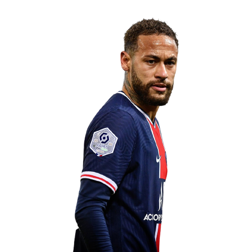

Neymar é um jogador de futebol incrível que cativa os fãs do esporte em todo o mundo. Ele é um atleta de elite que combina habilidade técnica excepcional com uma personalidade vibrante e cativante. O que torna Neymar emocionante é sua capacidade de desafiar os limites e criar momentos mágicos em campo. Ele tem uma habilidade inigualável de driblar, mudar de direção rapidamente e marcar gols espetaculares de qualquer posição no campo. Além de sua habilidade em campo, Neymar é um exemplo de resiliência e superação. Ele enfrentou muitos desafios em sua vida e carreira, mas sempre encontrou uma maneira de superá-los e se tornar ainda mais forte. Ele é um modelo de perseverança e determinação para muitos jovens jogadores de futebol. Mas, além de suas habilidades como jogador, Neymar é um indivíduo apaixonado e carismático que é amado por fãs em todo o mundo. Ele é conhecido por sua energia contagiante e amor pela vida, bem como sua dedicação à família, amigos e caridade. O legado de Neymar no futebol é indelével. Ele é considerado um dos melhores jogadores da atualidade e tem um futuro brilhante pela frente. Sua habilidade, personalidade e determinação o tornam um jogador emocionante e inspirador que continuará a encantar os fãs do futebol por muitos anos.


Neymar Junior
O Caos Perfeito
